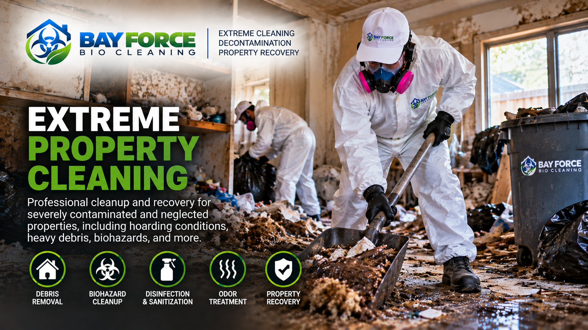

SPECIALTY CLEANING & PROPERTY RECOVERY
Biohazard & Extreme Property Cleanup in Sonoma, Marin, Napa & San Francisco
Bay Force Bio provides professional biohazard cleanup, extreme property cleaning, decontamination, and property recovery throughout Sonoma County, Marin County, Napa County, and San Francisco. We handle heavily affected properties involving accumulated debris, animal waste, rodent contamination, severe odors, and other difficult cleanup conditions.

OUR APPROACH
Biohazard & Extreme Property Cleanup May Include
Heavy-Duty Cleaning
Detailed cleaning of heavily affected rooms, surfaces, fixtures, and other areas beyond the scope of regular cleaning.
Debris, Trash & Contaminated Material Removal
Removal and organization of unwanted materials, trash, debris, and contaminated contents as appropriate for the condition of the property.
Professional Decontamination
Professional cleaning and decontamination for properties affected by severe sanitation conditions, animal waste, rodent contamination, and other difficult cleanup situations.
HEPA Filtration
HEPA filtration equipment may be used when appropriate to help manage airborne particles during the cleanup.
Odor Treatment
Additional odor-treatment options may be available when persistent odors are associated with the property conditions.
Property Recovery
Our goal is to help transform heavily affected areas into cleaner, safer, and more manageable spaces.
THE BAY FORCE PROCESS
A Systematic Approach to Extreme Cleaning
1. Evaluate
We review the property conditions and determine the scope of specialized cleaning required.
2. Plan
We establish an appropriate cleanup approach based on the areas affected and the conditions present.
3. Clean & Decontaminate
Our team performs detailed cleaning and decontamination using appropriate equipment, products, and procedures.
4. Recover
We focus on helping return the property to a cleaner, safer, and more manageable condition.
SERVING THE NORTH BAY & SAN FRANCISCO
Extreme Property Cleaning & Biohazard Cleanup Across Our Service Area
Bay Force Bio provides extreme property cleaning, biohazard cleanup, decontamination, and property recovery services throughout Sonoma County, Marin County, Napa County and San Francisco.
SPECIALTY CLEANING & PROPERTY RECOVERY
Does the Property Need More Than Regular Cleaning?
Tell us about the property and the conditions you are dealing with. Our team can review the information and help determine the appropriate next step.